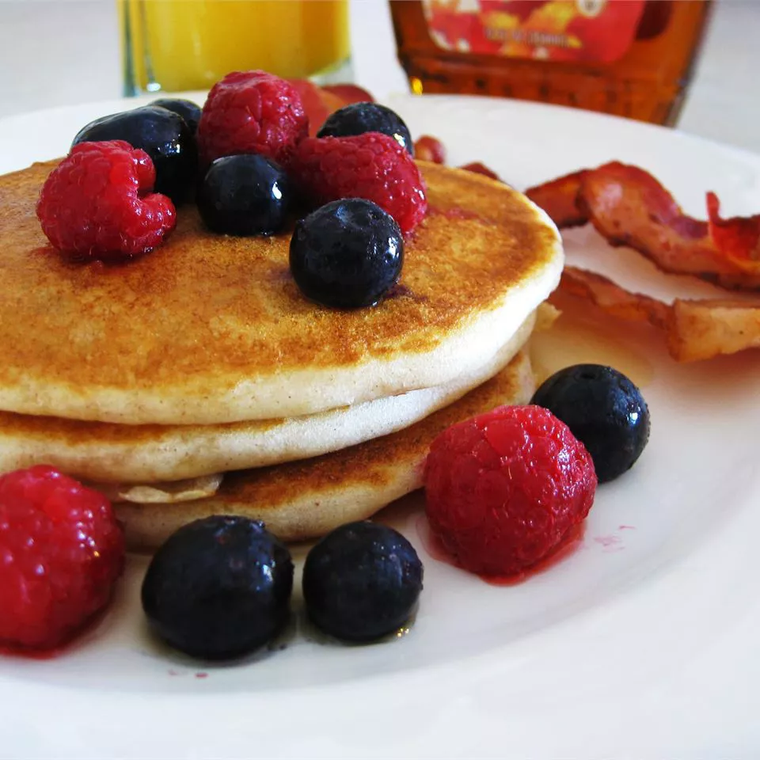

Gluten-Free Pancakes

Description
This recipe makes fluffy potato starch pancakes with a consistency and taste comparable to those made with wheat flour. Serve with your choice of condiments.
source: Delicious Gluten-Free Pancakes
Ingredients
- 1 cup rice flour
- 3 tablespoons tapioca flour
- ⅓ cup potato starch
- 4 tablespoons dry buttermilk powder
- 1 packet sugar substitute
- 1 ½ teaspoons baking powder
- ½ teaspoon baking soda
- ½ teaspoon salt
- ½ teaspoon xanthan gum
- 2 eggs
- 3 tablespoons canola oil
- 2 cups water
Steps
- In a bowl, mix or sift together rice flour, tapioca flour, potato starch, dry buttermilk powder, sugar substitute, baking powder, baking soda, salt, and xanthan gum. Stir in eggs, water, and oil until well blended and few lumps remain.
- Heat a large, well-oiled skillet or griddle over medium-high heat. Spoon batter onto skillet and cook until bubbles begin to form. Flip and continue cooking until golden brown on bottom. Serve immediately with condiments of your choice.